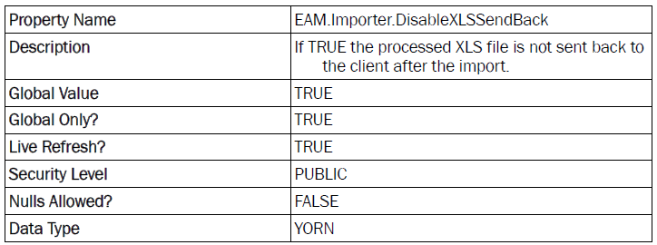
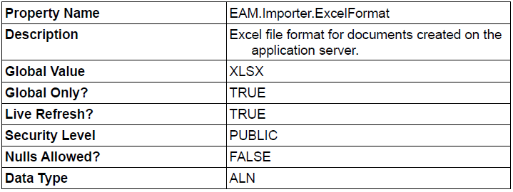

Configuration Options for maximex
Some behavior of maximex can be finetuned with System Properties directly in Maximo. All of the following System Properties are optional! The only two required system properties are EAM.DatamanagementTool.AppKey and EAM.DataManagementTool.ModuleKey and contain the license keys for the application. These two properties are described in the installation manual.
Configuration Options for the EAM Importer
Property EAM.Importer:DisableXLSSendBack

This system property controls if the processed XLS file is sent back to the client after the import process. If you do not want the file to be sent back to the client, then set this to true. If this system property is missing, has no value or has a value of false then the processed XLS File is sent back to the client.
Property EAM.Importer.MaxRows
This system property allows you to limit the maximum number of rows in a XLS file to import. If the number of data rows in the XLS worksheet exceeds the given number of rows an error message is displayed and the import is not started. The property EAM.Importer.MaxRows is a global setting. It sets the limit for all Maximo applications where the importer is enabled for. You can however set a specific limit for every Maximo object (but you don't have to). For example: You want a limit of 500 records as a default but want a limit of 200 records for the ASSET object then you set the Global Value for the EAM.Importer.MaxRows property to 500 and create a new property EAM.Importer.MaxRows.ASSET with a global value of 200. It is possible to create a specific row limit for every Maximo object by creating a system property with the property name of EAM.Importer.MaxRows.<MBONAME>. Please note that you have to specify the name of the Maximo business object in UPPERCASE!. The limit is then used for every import in an application which has the specified object als main object.
Property EAM.Importer.Templates.DisableDD
This system property disables the creation of the DataDictionary worksheet in all the templates created by the EAM Import tool (simple template, extended template and specification template).
Property EAM.Importer.Searchresults.DisableDD
This system property disables the creation of the DataDictionary worksheet in all the search results downloaded by the EAM Import tool (simple searchresult, searchresult with specification data and extended search result download).
Property EAM.Importer.Searchresults.WriteYORNas10
If this system property is set YORN attributes are not exported with Y and N but with 1 and 0. The major advantage of this is, that files with 1 and 0 for YORN can be imported in any language in Maximo. If Y and N are used, then the file can not be imported with e.g. german language setting because Y is not a valid YORN value. In german the values are J for "Ja" and N for "Nein".
Property EAM.Importer.<OBJECTNAME>.<ATTRIBUTENAME>
You are now able to define default values for Maximo attributes which are used during the import with the EAM importer. The naming convention for the system property name is: EAM.Importer.Default.<OBJECTNAME>.<ATTRIBUTENAME>
The defined default value from the System Property is ignored if there is a column for
this attribute in the XLS import file!
Example: The default value for WORKORDER.WORKTYPE should be PRBLM
Property EAM.Importer.Default.WORKORDER.WORKTYPE
You can define several default value entries for a given Maximo Object (e.g. EAM.Importer.Default.WORKORDER.WORKTYPE and EAM.Importer.Default.WORKORDER.WOPRIORITY).
Property EAM.Importer.<IMPORTMODE>.SLEEPTIME
With the System Property EAM.Importer.<IMPORTMODE>.SLEEPTIME you can define a time duration in Milliseconds. After processing a row for simple import and specification import or one row of the main object for extended import, the importer waits for the specified duration. The load on the Maximo infrastructure is reduced because the task is spread over a longer period of time. The import process will not consume all the resources it can get and Maximo keeps to be responsive to the other users. The sleep time can be defined for every import mode separatley.
Property EAM.MassDelete.SLEEPTIME
Similar to the SLEEPTIME property for the import here is also a System Property EAM.MassDelete.SLEEPTIME. This property defines the sleep time after deleting one record.
The answer to the question of which the correct values for those SLEEPTIME Parameters are, depend on several variables. Chances are they are not required at all because your application server has enough resources (multi CPU, multi core, cluster) or large imports are executed off hours. If you will rarely MassDelete larger amounts of data you can do without the MassDelete.SLEEPTIME Parameter. If the usage of MassDelete evidentially causes slow system performance for other users the "EAM.MassDelete.SLEEPTIME" parameter should be set starting with 50. This will cause a delay of 5 seconds for a deletion of 100 objects but therefore other users will notice fewer delay.
Property EAM.Importer.ExcelFormat
The searchresult download and the tamplate generation (For simple, extended and specification mode) will create new excel documents on the application server and send them back to the user. By default those file are created in the older binary Microsoft Excel fileformat with the .xls extension. If you create the system property EAM.Importer.ExcelFormat with the value XLSX the new Excel documents are created in the new XML based XLSX format.

If this system property is missing or the value is not XLSX the older excel file format is used
Property EAM.Importer.KeyWriteback.IfEmpty
EAM Datamanagement Tools from September 2016 onwards have the ability to write the key attributes of a maximo object back to the excel import file. This is useful if your do not specifiy your key value in the Excel import file, but if the Maximo object is generating the key in the business logic or the key value is obtained from another external source. The system property EAM.Importer.KeyWriteback.IfEmpty enables the importer to write back generated key values if they are not specified in the Excel import file.
Existing key values in the Excel import file are not overwritten by default. See the system property EAM.Importer.KeyWriteback.RewriteChanged if you want to enable this feature.
Property EAM.Importer.KeyWriteback.RewriteChanged
In addition to the above setting you can also allow the importer to overwrite key values you have specified in your Excel import file if they have changed in the maximo object. e.g. you have specified a key value, but the business logic decided to use another value (or just convert it to uppercase).
The default value for this system property is false so that user specified values in the Excel import file are not overwritten.
Property EAM.Importer.MinFreeHeapPct
During the export maximex check periodically the amount of free memory. If the free memory falls below a configured limit the export of data is aborted. The limit can be configured with the System Property "EAM.Importer.MinFreeHeapPct". See chapter 11.2 Aborting the export for a description of this feature.
The default value for this system property is 10 percent.
Property EAM.Importer.DebugLog
If you suspect problems in your Excel import file it is possible to enable a detailed log which is created during the import and can then be downloaded from the import history dialog. This logfile shows you exactly which data was read from your input fi le. It also shows how the import process is deciding whether to create a new object or to modify an existing one.
The default value for this system property is 0 (log disabled).
Property EAM.Importer.SheetNamePrefixSpecification
When importing (or exporting) specifications, Excel sheets are used (one sheet per specification):

The default name of the sheet used by maximex is build like: Specification_+Specification-ID. If long strings are used as Specification-IDs, the name of the sheet may exceed the maximum name length allowed in Excel (31 characters). To solve this problem, you can use this property and set a shorter prefix for the specification sheet name.
For example, if you set EAM.Importer.SheetNamePrefixSpecification=Spec_, then the sheet name will look like this

Property EAM.Importer.ImportHistoryFilter
Since version 6.2.0
To restrict the results list in the “Data Importer History” dialog, predefined filter values can be set using
this property.
Possible values are:
| Value | Description |
|---|---|
| <Empty> | no filter |
| PERSON | only the imports of the logged-in user |
| SITE | only imports of users from the same site as the logged-in user |
| PERSONGROUP | only the imports of users from the same persongroup as the logged-in user |
| LOCATIONSITE | only the imports of users from the same locationsite as the logged-in user |
| LOCATIONORG | only the imports of users from the same locationorg as the logged-in user |
The default value for this system property is <EMPTY> (no filter).
The ‘ORGID’ and ‘SITEID’ columns have been added to the EAMIMPORT table for this feature. These fields are only filled automatically for new entries, but not for existing entries. To fill the values in existing entries, the following SQL statements can serve as an example. Once the values have been filled, it is no longer possible to recognize how the entries were filled.
-- fills ORGID and SITEID with orgid and siteid of the user who entered the entry
update EAMIMPORT set SITEID = (select DEFSITE from MAXUSER where userid = ENTERBY) where SITEID is null;
update EAMIMPORT set ORGID = (select ORGID from SITE where siteid = (select DEFSITE from MAXUSER where userid = ENTERBY))) where ORGID is null;
| Property Name | EAM.Importer.ImportHistoryFilter |
|---|---|
| Description | Filter for visibility of EAM Imports in Import History |
| Global Value | <Empty> (no filter) |
| Global Only? | TRUE |
| Live Refresh? | TRUE |
| Security Level | SECURE |
| Nulls Allowed? | TRUE |
| Data Type | ALN |
Configuration Options for the EAM Exporter
Property EAM.Export.MaxRows
This system property allows you to limit the maximum number of rows which can be downloaded into searchresult downloads (either simple, extended or spec) or into templates. If the number of rows in your current searchresult is greater than the configured limit a error message is displayed and the searchresult download is not started. The property EAM.Export.MaxRows is a global setting. It sets the limit for all Maximo objects/applications where the user can download search results. You can however set a specific limit for every Maximo object (but you don't have to). For example: You want a limit of 500 records as a default but want a limit of 200 records for the ASSET application then you set the Global Value for the EAM.Export.MaxRows property to 500 and create a new property EAM.Export.MaxRows.ASSET with a global value of 200. The object name must be specified in UPPERCASE! It is possible to create a specific row limit for every Maximo object by creating a system property with the property name of EAM.Importer.MaxRows.<MBONAME>. Also note that you have to use the name of the Maximo business object and not the name of an application.
Configuration Options for the EAM Fieldupdater
Property EAM.FIELDUPDATE.LOGGING
Data changes with the EAM Fieldupdater (see chapter EAM Fieldupdater) can be logged and reviewed later in the Fieldupdater History dialog (see chapter EAM Fieldupdater History). By default, this logging is not enabled. You can enable the logging anytime by creating a system property EAM.FIELDUPDATE.LOGGING (data type YORN) with the value 1.
Property EAM.FIELDUPDATE.MAXRECORDS
The maximum number of records which can be updated at the same time with the EAM Fieldupdater is not limited by default. The administrator can create a system property EAM.FIELDUPDATE.MAXRECORDS to limit the number of records for each Fieldupdater invocation.
Property EAM.FIELDUPDATE.MAXERRORS
Default behaviour of the EAM Fieldupdater is to continue with the next record/attribute in case of an error. An error could be an invalid value for a attribute (not in valuelist, wrong datatype) or the field validator is not happy with the entered value or the attribute or mbo are readonly. If you want the Fieldupdater to quit after a specified number of errors occurred, you can set the system property EAM.FIELDUPDATE.MAXERRORS. This integer specifies the maximum number of errors which are "allowed". If this number of errors is reached the fieldupdater stops executing the current update.
Property EAM.DATAMANAGEMENTTOOL.ENABLEFIELDMAPPING
Since version 6.2.0
Mapping of keyfields for keyfield update
(If property is not existing, logic is deactivated by default)
Possible values are:
| Value | Description |
|---|---|
| true | logic activated |
| false | logic deactivated |